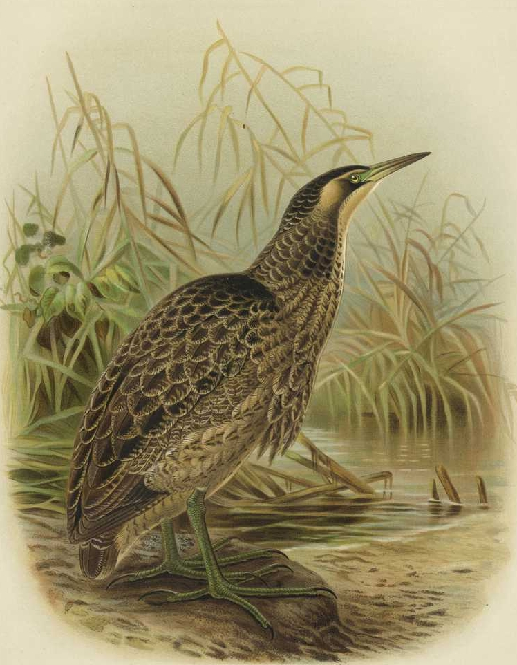
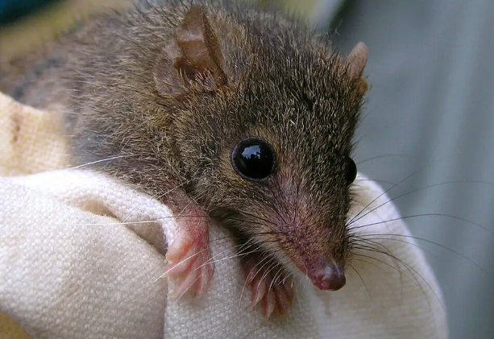

Endangered Wildlife
Endangered animals are species at risk of extinction due to factors like habitat loss, poaching, and climate change. Conservation efforts are essential to protect these species and their habitats.
Australia is at number 1 for the most mammal extinctions in the whole world. With 34 mammals extinct which were native to this country. From the Tasmanian tiger which was officially extinct in 1936 to the Bramble Cay Melomys extinct in 2019.
Mountain Pygmy Possum

Also known as Burramys is a mouse sized marsupial. It can be found in dense rock screes and boulder fields in Southern Victoria. This small sized creature is the only Australian Marsupial that hibernates. It can spend up to seven full months asleep.
The Mountain Pygmy possums are critically endangered with only 2000 left in the wild.
Due to climate change, them losing their habitat and the shortage of their food source, the Bogong Moth. Overtime the Mountain Pygmy Possum has become Endangered.
Australian Bittern

Nicknamed the “bunyip bird.” This is a large brown bird that lives in well vegetated wetlands. It stands nearly a meter tall with a wingspan of over a meter as well.
Where can it be found?
- Southern Queensland
- New South Wales
- Victoria
- South Australia
- Tasmania
- New Zealand
- New Caledonia
Due to the loss of their habitat through changer water regimes and grazing the Australian Bittern has become endangered. Along with other factors such as the introduction of the Red Fox which preys on eggs and chicks. Have caused this species of bird to become endangered with less than 1000 left in the wild.
Silver-Headed Antechinus

The Silver-Headed Antechinus is one of the smallest Marsupials in world. Having a small head, large ear and a narrow snout. This tiny animal can be found in wet eucalypt and rainforest in Central Queensland. Such as the eastern escarpment of Kroombit Tops National Park.
Due to threats like the increasement of wildfires and planned burns their habitat becomes loss to these fires. Along with predation with the introduction of cats and foxes the Silver-Headed Antechinus is on the priority list of 20 Mammals requiring urgent management intervention.